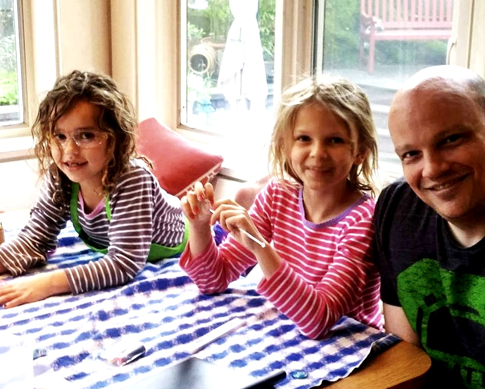
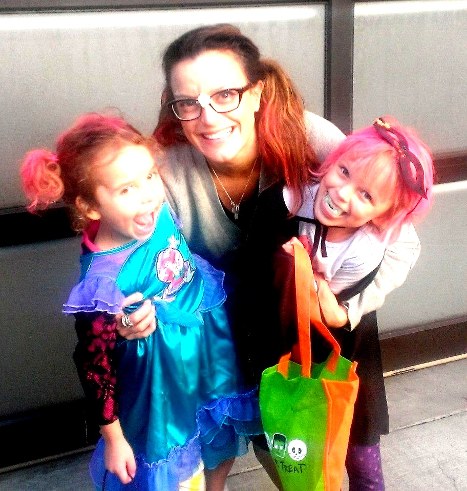
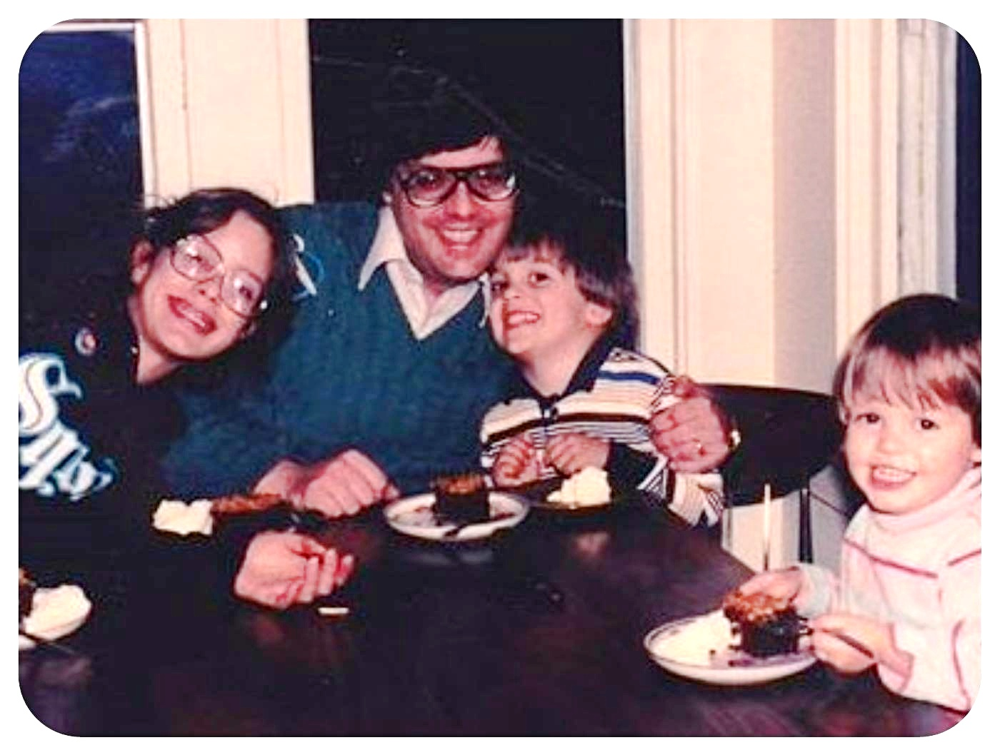

Me & My Goofballs

My Family

Halloween
{photo credit: Geoff Harris}
{photo credit: Geoff Harris}

Teenage Geek
{that's me, far left.}
photo credit: Sean Cullen
{that's me, far left.}
photo credit: Sean Cullen
Looking down on empty streets, all she can see
Are the dreams all made solid
Are the dreams all made real
All of the buildings, all of those cars
Were once just a dream
In somebody's head
She pictures the broken glass, she pictures the steam
She pictures a soul
With no leak at the seam
Let's take the boat out
Wait until darkness
Let's take the boat out
Wait until darkness comes
Nowhere in the corridors of pale green and grey
Nowhere in the suburbs
In the cold light of day
There in the midst of it so alive and alone
Words support like bone
Dreaming of Mercy Street
Wear your inside out
Looking for Mercy
--Peter Gabriel
×